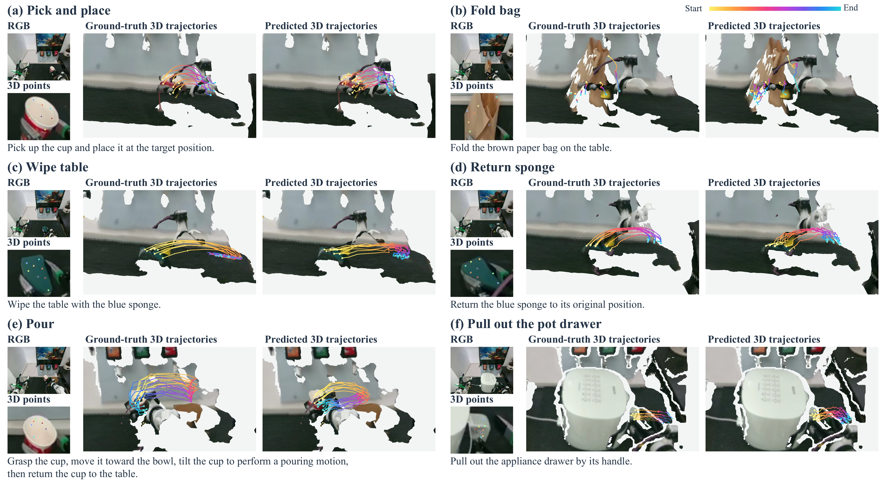
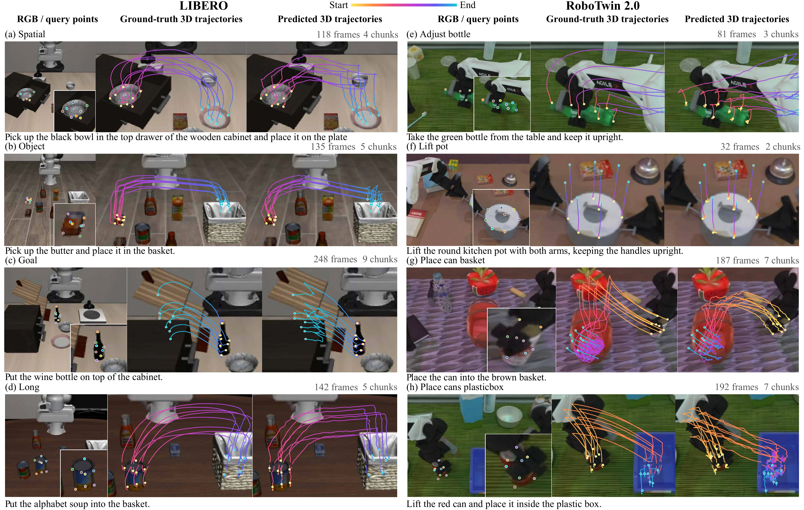
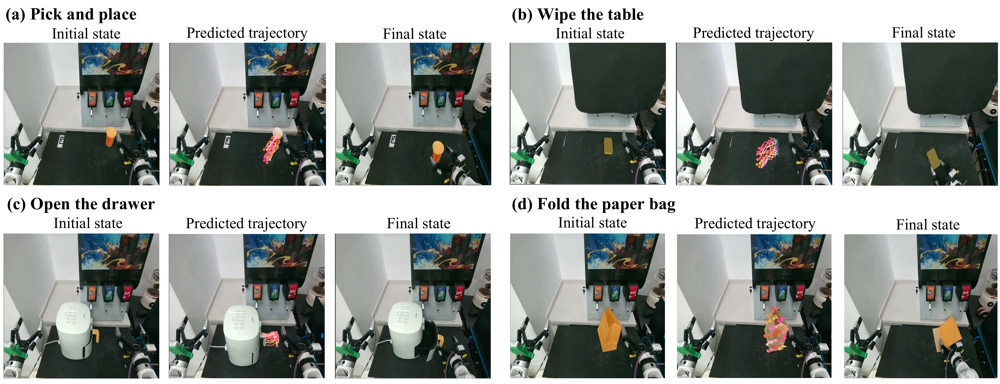

Joint video–trajectory training
Future-video supervision and trajectory flow matching transfer video-learned motion representations to point prediction.
A world point model for manipulation
Video-learned motion priors. Metric point trajectories.
No future-video generation.
Overview
AtomWPM forecasts the future 3D trajectories of query points on manipulated objects, using a short single-view RGB history, a language instruction, and the queries’ current 3D positions.
Pretrained video models contain useful motion priors, but synthesizing future frames is expensive. AtomWPM transfers these priors to a trajectory expert through joint video–trajectory training. At inference, observed frames pass through the video model once. Cached features then condition trajectory denoising, without generating future video.
The resulting metric trajectories provide a compact interface for manipulation. We evaluate forecasting on LIBERO, RoboTwin 2.0, and real-world data, and use a 4D action expert to turn trajectories into robot actions.
Method
A video expert and a trajectory expert learn together. At test time, only observed-frame features and the trajectory expert are needed for forecasting.

Future-video supervision and trajectory flow matching transfer video-learned motion representations to point prediction.
Trajectory tokens read observed-frame features. Future-video tokens remain masked from trajectory prediction.
Cache observed-frame keys and values once, then jointly denoise the point–time tokens into future metric positions.
4D prediction
Explore real-world manipulation and simulation results, from rigid motion to articulated objects and deformable paper bags.
Explore 3D point motion across five real-world manipulation tasks.

Selected qualitative examples from the paper. Endpoint-conditioned examples receive target XYZ; these should be distinguished from forecasts without endpoint input. The drawer example has incomplete observed ground truth.
Fresh AtomWPM inference for the eight tasks shown below. Each clip follows one object's complete contiguous manipulation segment, using the same eight point identities across chunks.
H3/F30, 10 denoising steps. Observations are refreshed and true endpoint XYZ is supplied at each chunk. Raw predicted tracks are shown without smoothing; chunk boundaries are marked. LIBERO plays at source speed; RoboTwin plays at 0.4× source speed for readability.
Inference protocol and case metadata

The paper figure uses the same tasks and selected object identities as the videos above.
Robot execution
In these four rollouts, AtomWPM predicts point trajectories that are passed to the action decoder to guide physical robot execution.

Human demonstrations
Trajectories extracted from human demonstrations are provided to the action decoder to produce robot actions. Each task pairs the human demonstration with the corresponding robot execution.
Experimental results
Selected results reported in the current paper. Forecasting comparisons use matched endpoint inputs; robot-control numbers describe the complete action-expert system.
Four denoising steps, endpoint-conditioned simulation and real-data settings.
Reported endpoint-conditioned inference comparison; see the paper for hardware and protocol.
65.0% vs. 32.5% for π₀.₅, using AtomWPM trajectories with the action expert.
Average across four tasks, with 10 trials per task in each setting.
| Method | Trajectory source | In-domain | Cross-scene | Cross-object |
|---|---|---|---|---|
| π₀.₅ | — | 57.5% | 32.5% | 32.5% |
| 4D action expert | Human demonstration | 62.5% | 62.5% | 60.0% |
| 4D action expert | AtomWPM | 65.0% | 65.0% | 57.5% |
Source: current paper, Tables 1–3. Cross-scene changes the scene appearance; cross-object replaces training objects with objects of different textures. These are reported experiment results, separate from the selected visual examples above.
Open research
Paper, source code, model weights, and data will be linked here when released.